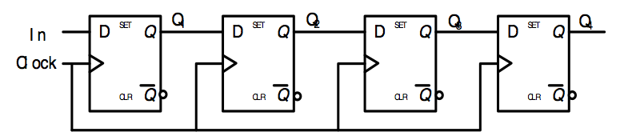
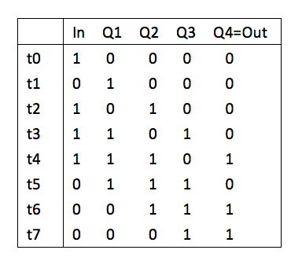
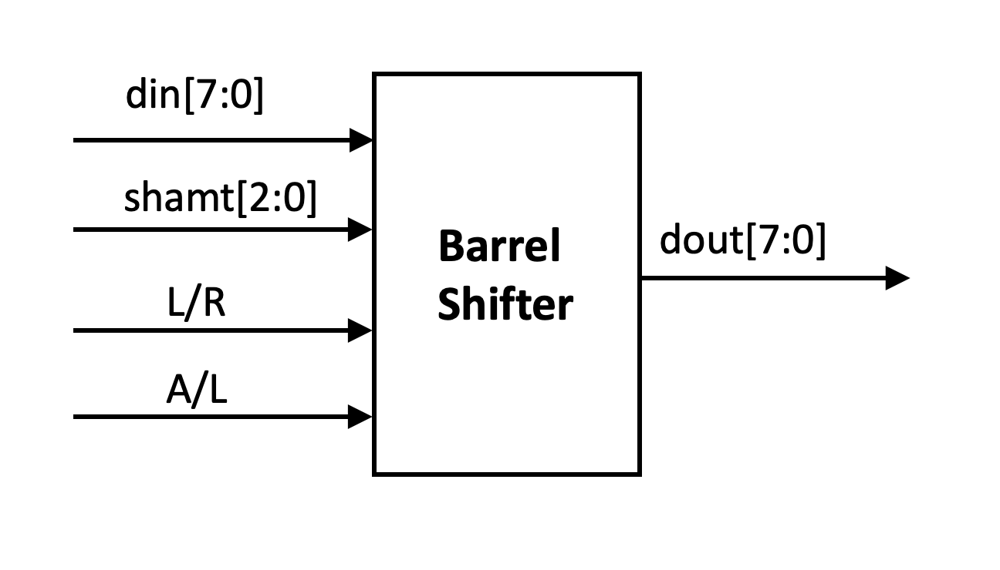
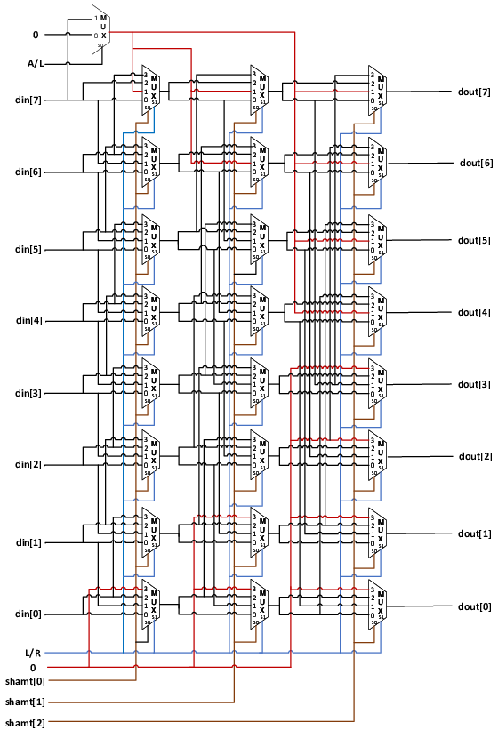

Lab 6: Shift Registers and Barrel Shifters
“I want a clean teacup,” the Hatter interjected, “Let’s all move our seats around!”
*Saying that, he moved to another spot, followed by the Dormouse, who then moved to the Hatter’s seat. Alice reluctantly sat down in the Hatter’s seat. The only one who got a good seat this time was the Hatter, while Alice’s seat was worse than before because the March Hare had spilled milk on it.
— Alice’s Adventures in Wonderland by Lewis Carroll
In this lab, we will learn about the design of commonly used shift registers and implement the barrel shifters needed in shift instructions.
Shift registers
On the rising edge of the clock, the shift register shifts the data stored in it one bit in a certain direction according to its control signal. Shift registers are also commonly used devices in digital systems.
Figure fig-shift01 shows a simple right shift register consisting of four D flip-flops. Data is input from the left end of the shift register, and the contents of each flip-flop are transferred to the next flip-flop at the positive edge (rising edge) of the clock. Figure fig-shift02 shows an example of serial transfer using this shift register.

Fig. 48 Shift register block diagram

Fig. 49 Shift register
Arithmetic shift and logic shift registers
Arithmetic shifting here refers to shifting while considering the sign bit. Arithmetic shifting must ensure that the sign bit remains unchanged. Arithmetic left shifting is the same as logical left shifting, while arithmetic right shifting fills the leftmost empty position with the sign bit. Logical shifting, whether left or right, fills empty positions with 0s. Circular shifting is a shifting method that fills the highest/lowest empty position with the shifted-out bit. Setting is entering an 8-bit data into the register, that is, assigning an initial value to the register.
Shift registers can be easily described using Verilog HDL language, for example:
Q <= {Q[0],Q[7:1]}; // circular right shift
Q <= {Q[7],Q[7:1]}; // arithmetic right shift
Table tab-shift describes the common shift register operation mode.
The left end serially inputs a 1-bit value, and the parallel output of an 8-bit value means that each clock cycle shifts one bit to the right, and the leftmost bit shifted in is determined by an external switch to be either 1 or 0. As in other cases, the output is 8 bits simultaneously.
This function is useful for serial-to-parallel conversion, as it can store the 8 bits entered in sequence in the shift register and output an 8-bit number after 8 cycles. Subsequent keyboard serial inputs can use this function.
Please think about how these functions can be implemented in Verilog.
Control bit |
Working mode |
|---|---|
0 0 0 |
set to 0 |
0 0 1 |
set value |
0 1 0 |
logic right shift |
0 1 1 |
logic left shift |
1 0 0 |
arithmetic right shift |
1 0 1 |
Serial input of 1-bit value on the left end, parallel output 8-bit value |
1 1 0 |
circular right shift |
1 1 1 |
circular left shift |
Barrel Shifter
In CPUs, we often need to perform shift operations on data. However, traditional shift registers can only move one bit per cycle, so multiple clock cycles are required to perform multiple shifts, which is inefficient.
Barrel shifters use combinational logic to move multiple bits simultaneously, which is extremely efficient. Therefore, barrel shifters are often used in ALUs to perform shifts.
Figure fig-barrel01 shows the input and output pin diagram of an 8-bit barrel shift register.
The input data din and output data dout are both 8 bits, and the shift amount shamt is 3 bits.
The select pin L/R indicates left shift and right shift, with 1 representing left shift and 0 representing right shift.
The A/L select pin is for arithmetic/logic selection: set to 1 for arithmetic shift, set to 0 for logical shift.

Fig. 50 Barrel Shifter’s block diagram

Fig. 51 Barrel Shifter’s circuit diagram
Figure fig-barrel02 shows the specific implementation of the barrel shifter.
This implementation uses a large number of four-to-one multiplexers to implement arbitrary left or right shifts of 0 to 7 bits in three stages.
The first stage uses shamt[0] to control whether to shift one bit, the second stage uses shamt[1] to control whether to shift two bits based on the shift result of the first stage, and the third stage determines whether to shift four bits based on the second stage.
Each 4-to-1 multiplexer has two control pins. The lower bit S0 of the control pin indicates whether the current stage needs to shift. When it is 0, neither input 0 nor 2 will be shifted.
The high-order bit S1 of the 4-to-1 selector is controlled by the L/R input. When a shift is required (S0 = 1), a left shift selects input 11 (input 3), and a right shift selects input 01 (input 1). These two inputs are connected to the previous level’s output of the data’s low-order or high-order bits, respectively.
The choice between arithmetic and logical right shifts is determined by whether the high-order bit is set to 0 or din[7].
Note that this circuit is pure combinational logic, so the shift result can be directly changed without a clock signal when the input changes.
Thinking question
How can 32-bit data shifting be implemented in the RV32I instruction set using Verilog language?
Lab check-in contents
On-Board Lab: Using shift registers to implement random number generators
We can use an 8-bit shift register to implement a simple random number generator. The classic LFSR (linear-feedback shift register, Linear-feedback shift register ) can use an n-bit shift register to generate a binary cyclic sequence of length \(2^n-1\). Segments of such sequences appear random, so they are widely used for random sequence generation in communications. For example, the length of the long code in CDMA communications is a pseudo-random sequence of length \(2^{42}-1\).
In practice, an 8-bit right shift register can be used, with bits from left to right represented as \(x_7x_6x_5x_4x_3x_2x_1x_0\). Each clock cycle shifts one bit to the right, \(x_0\) is shifted out, and the leftmost bit shifted in is calculated according to the value of the previous cycle [1] :
For example, when the initial binary value is 00000001, the state of the shift register will change as follows: \(00000001 \rightarrow 10000000 \rightarrow 01000000 \rightarrow 001000000 \rightarrow 00010000 \rightarrow 10001000 \ldots\). The period of this sequence is 255. Of course, when the initial value is all zeros, the system will remain in the all-zero state indefinitely, so special handling is required for the all-zero state.
Please implement an 8-bit pseudo-random sequence with a period of 255, using a button as the clock signal. Display the 8-bit binary number in hexadecimal on the LED display and observe the generated random number sequence on the DE10-Standard development board.
Thinking question
The generated pseudo-random number sequence still has certain patterns. How can we generate more complex pseudo-random number sequences?
Online test
Shift register implementation
Barrel shifter
Linear feedback shift register
Footnotes